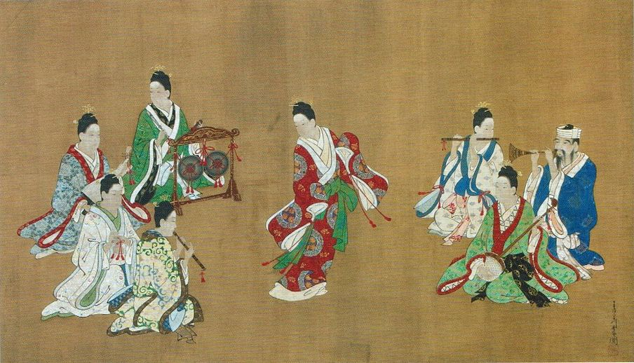
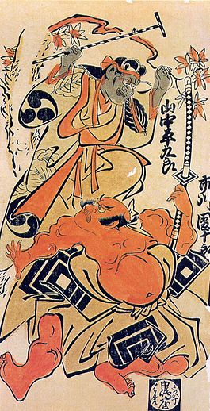
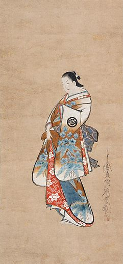

Gravuras Ukiyo-e Cotidianas de Hokusai: Reflexões do Edo na Impressão da Vida Diária
As gravuras ukiyo-e de Katsushika Hokusai, amplamente celebradas por suas vistas majestosas do Monte Fuji, também nos presenteiam com um olhar encantador e detalhado da vida cotidiana no Japão durante o próspero período Edo. Estas gravuras, muitas vezes coloridas e repletas de vivacidade, encapsulam a essência do termo "Ukiyo" - o "mundo flutuante" ou "mundo passageiro". Ao explorar a série de Hokusai dedicada às cenas cotidianas, somos transportados para um Japão animado e cheio de vida. Desde representações de atores kabuki em suas performances teatrais até retratos vívidos de cortesãs elegantes, as gravuras capturam a riqueza e a diversidade da sociedade urbana do período Edo. Cada cena é uma janela para o Ukiyo, refletindo as complexidades e prazeres da vida diária. Uma das notáveis contribuições de Hokusai para esse gênero é sua habilidade em transmitir emoções e histórias em um único quadro. As gravuras de Hokusai não são apenas registros visuais, mas narrativas visuais que narram contos de amor, humor e drama. Seja através da representação de jogos de tabuleiro, encontros noturnos em lanternas ou simples momentos de contemplação, Hokusai nos convida a testemunhar a riqueza da experiência humana. Além dos personagens notáveis, as gravuras também exploram os aspectos mais mundanos e, no entanto, cativantes, da vida cotidiana. Mercados movimentados, trabalhadores diligentes, momentos domésticos e festividades sazonais ganham vida através das mãos habilidosas de Hokusai. Sua atenção aos detalhes e a capacidade de capturar a atmosfera única de cada cena são evidentes em cada gravura. Estas gravuras ukiyo-e cotidianas, embora criadas há séculos, permanecem atemporais. Elas oferecem uma rara visão do passado, enquanto simultaneamente celebram a universalidade da experiência humana. O trabalho de Hokusai transcende a mera representação visual; é uma poesia visual que continua a inspirar e encantar, conectando-nos de maneira intemporal às alegrias e desafios da vida cotidiana no Edo.
Obras Gravuras Ukiyo-e
| Gravura em seda retratando uma performance musical Chōshun, c.1718 | Retrato dos atores Yamanaka Heikuro e Ichikawa Danjuro II | Cortesã em pé |
|  |  |  |